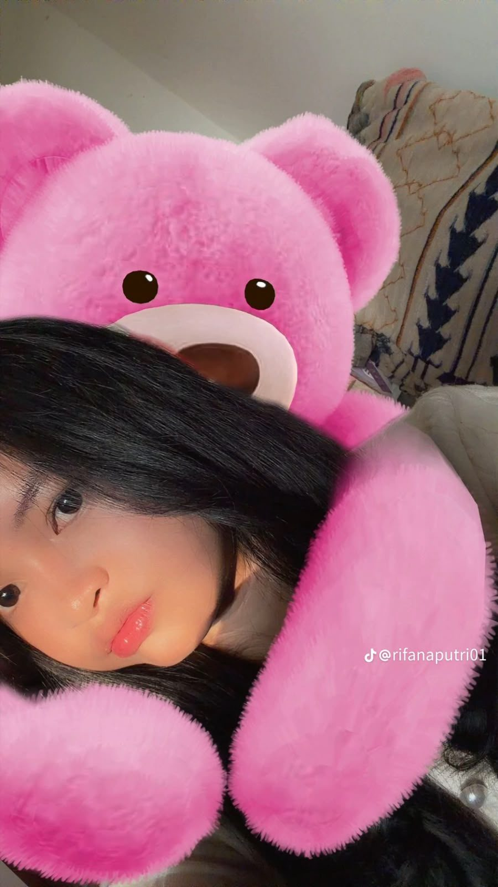
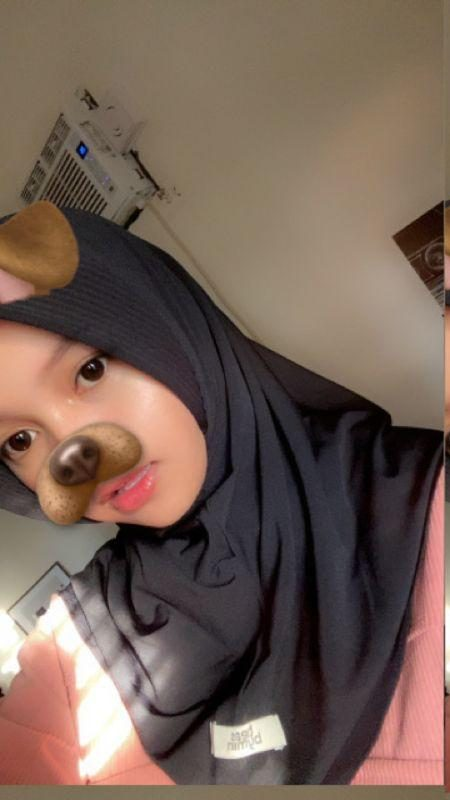
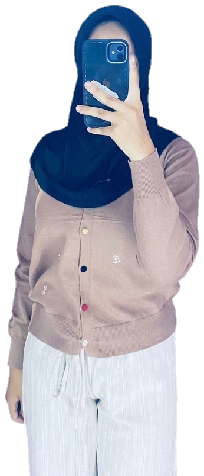
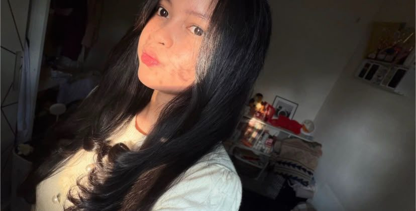
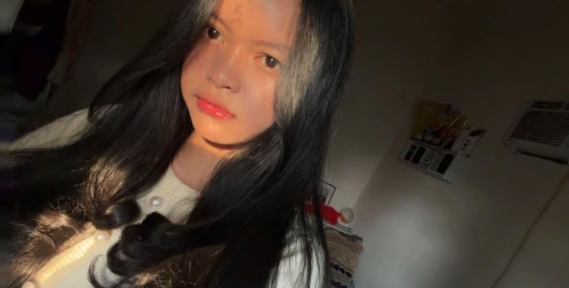
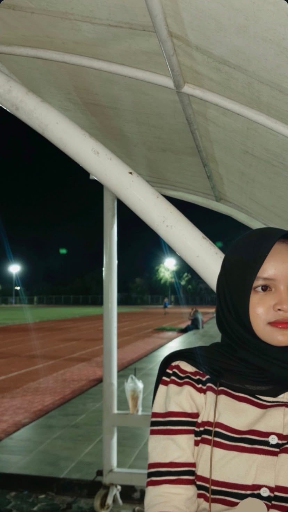
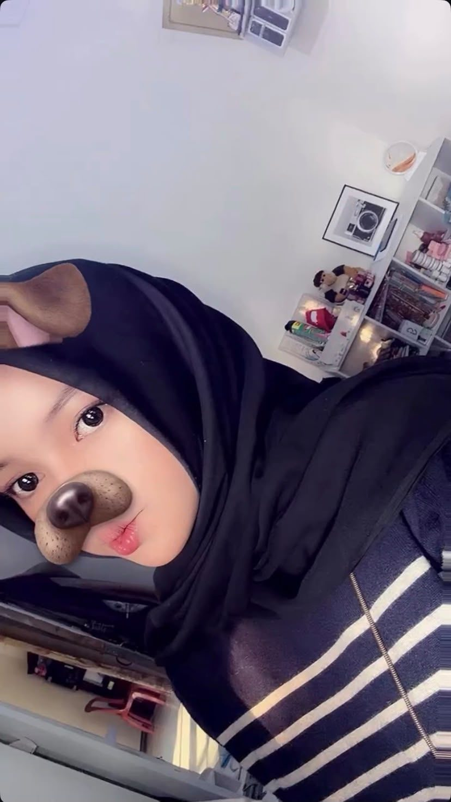
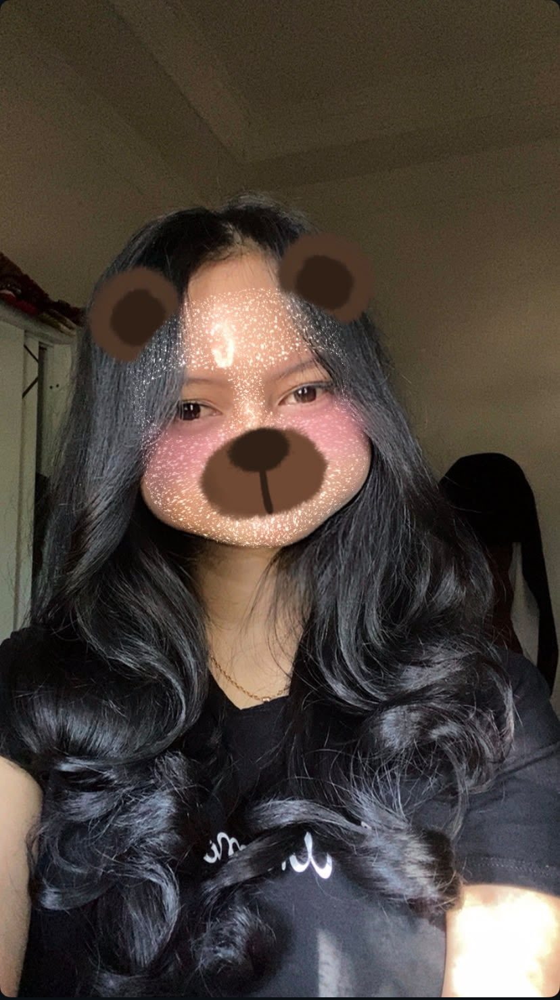

HAHAHA YESS ALWAYS YOU!! Makasih banyak ya udah jadi orang yang selalu ada dan bikin hari-hari terasa jauh lebih seru. Jujur aku beruntung banget bisa kenal kamu. Maaf ya kalo kadang aku suka nyebelin atau bikin bete, tapi di umur kamu yang ke-15 ini aku pengen liat kamu bahagia terus. Jangan pernah ngerasa minder sama pencapaian orang lain, karena kamu punya versi keren kamu sendiri. Keep shining yaa!






another year older, another chapter to begin. semoga di usia yang baru ini, hidup memperlakukanmu dengan lebih lembut. semoga segala hal yang sedang kamu perjuangkan menemukan jalannya, dan segala doa yang belum sempat terjawab perlahan menemukan muaranya.
doa-doa terbaik dan paling serius dariku, untukmu. semoga semesta berkenan mengamini segala hal baik yang bahkan belum sempat kamu lafalkan. semoga bahagiamu tidak sekadar menjadi persinggahan, melainkan sesuatu yang menetap.
selamat ulang tahun yang ke-15 ya, Rifana Putri Ariba. semoga semua hal baik selalu berpihak ke kamu hari ini, besok, dan seterusnya.
Rifana Putri Ariba